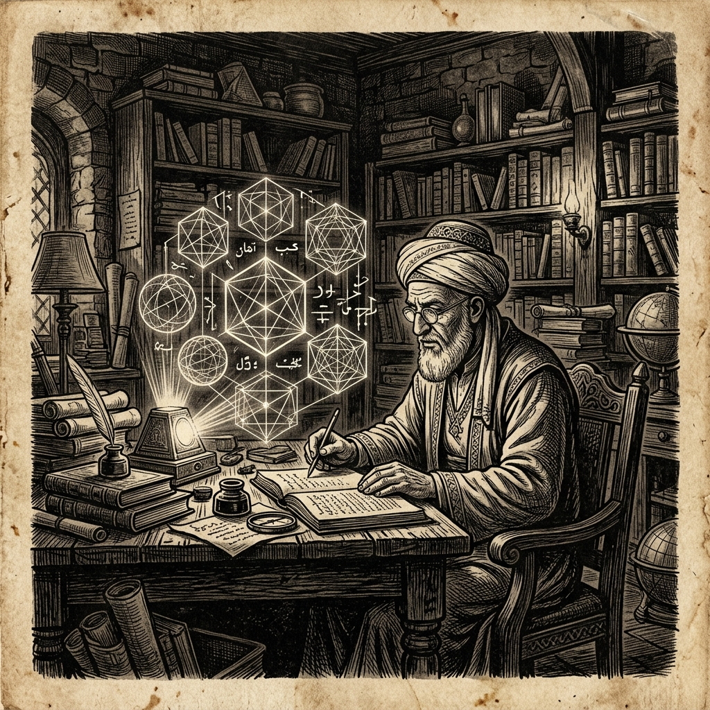

أهمية الفكر الفلسفي في عصر التحول الرقمي

في ظل التطور التكنولوجي المتسارع الذي يشهده عالمنا اليوم، يبرز السؤال الجوهري حول دور الفكر الفلسفي والتحليل النقدي في توجيه هذا التحول الرقمي الكبير وتأثيره على مجتمعاتنا العربية. إن الصحافة المكتوبة كانت ولا تزال منبر الفكر الحر والتحليل الرصين، وتسعى جاهدة لإعادة صياغة الوعي وتوجيهه نحو الحوار البناء. لا يمكننا إغفال الأثر العميق للأدوات الرقمية في تشكيل أنماط التفكير لدى الشباب، مما يستدعي وقفة جادة لإعادة تقييم المحتوى المقدم لهم. من هنا ينطلق دور صحيفتنا في تقديم رؤى متوازنة تجمع بين الأصالة والمعاصرة لبناء مستقبل فكري مستنير يعيد الاعتبار للكلمة الصادقة والتحليل المعمق الذي يتجاوز قشور الأخبار السطحية.
علاوة على ذلك، فإن الثورة الرقمية تفرض علينا تحديات أخلاقية جديدة تتعلق بالخصوصية والذكاء الاصطناعي وتوجيه السلوك البشري من خلال الخوارزميات المعقدة. هنا يتجلى دور الفيلسوف في نقد هذه الأدوات والوقوف على أبعادها الإنسانية، لئلا تتحول التكنولوجيا من وسيلة لخدمة البشرية إلى غاية تبرر الاستلاب الفكري وفقدان السيطرة على المصير المشترك.
إن العودة إلى السؤال الفلسفي في عصر السرعة والسطحية الرقمية ليست ترفاً فكرياً، بل هي ضرورة وجودية لاستعادة عمق الإدراك وحماية العقل من التشتت والنمطية الاستهلاكية. فالأفكار العظيمة لا تنمو في ضوضاء المنصات الافتراضية، بل تحتاج إلى مساحات من التأمل الهادئ والتحليل الرصين الذي تلتزم صحيفتنا بتقديمه لقراءها الأعزاء.